Genero BDL是一种编程语言，用于开发企业资源规划（ERP）系统和其他企业级应用程序。
它是由四维公司（4D）开发的，旨在提供一个强大的开发平台，用于构建跨平台的企业级软件解决方案。
Genero BDL具有丰富的功能和工具，使开发人员能够创建高度定制化和可扩展的ERP应用程序，包括财务管理、供应链管理、生产管理等方面的功能。
Genero BDL支持多种数据库，并提供丰富的用户界面开发功能，使开发者能够构建现代化、直观的用户界面，以满足企业客户的需求。
Genero BDL的应用场景广泛，主要包括但不限于以下几个领域：
-
企业资源规划（ERP）系统开发： Genero BDL可用于开发各种规模的ERP系统，包括财务管理、供应链管理、人力资源管理等功能，满足企业对于整合管理各种业务流程的需求。
-
客户关系管理（CRM）系统： Genero BDL可用于构建CRM系统，帮助企业管理客户关系、提高客户满意度，并提供销售、市场营销等功能。
-
零售管理系统： Genero BDL可以用于开发零售行业的管理系统，包括库存管理、销售管理、支付处理等功能，帮助零售商提高效率和服务水平。
-
制造业管理系统： Genero BDL可用于开发制造业管理系统，包括生产计划、物料管理、质量控制等功能，帮助制造企业提高生产效率和产品质量。
-
金融服务应用： Genero BDL可用于开发各种金融服务应用，包括银行系统、证券交易系统、保险管理系统等，满足金融机构对于高度安全和可靠性的需求。 总之，Genero BDL适用于各种企业级应用程序的开发，可以根据不同行业和业务需求进行定制和扩展。
Genero BDL具有以下优势：
-
跨平台支持： Genero BDL支持多个操作系统和数据库平台，包括Windows、Linux、Unix等，使开发人员能够轻松构建跨平台的企业级应用程序。
-
丰富的功能和工具： Genero BDL提供了丰富的功能和工具，包括数据库访问、用户界面开发、报表生成等，帮助开发人员快速构建功能强大的应用程序。
-
高度定制化： Genero BDL允许开发人员根据实际需求进行高度定制化，包括界面样式、业务逻辑、报表格式等，满足企业客户的个性化需求。
-
易于学习和使用： Genero BDL的语法简洁明了，易于学习和使用，使开发人员能够快速上手并提高开发效率。
-
强大的性能： Genero BDL具有优化的执行引擎和高效的编译器，保证应用程序具有良好的性能和响应速度。
-
持续更新和支持： Genero BDL由四维公司提供持续更新和技术支持，确保开发人员始终能够使用到最新的技术和功能。
本文以TIPTOP GP做为开发环境，保证环境有正常授权即可使用。
TIPTOP GP主机上基本配置已经设置好，不需要额外设置。
准备工作目录
避免影响正常作业，请在服务器上新建一个工作目录，之后所有的练习代码都可以放到此目录下。
我的工作目录为/u1/usr/tiptop/darcy，目录下面有一个目录4gl，用来放4gl代码。
新建代码文件
main
display 'hello world'
end main
将文件上传到服务器工作目录/4gl目录下，或者直接在服务器新建也可以。
编译运行
- fglcomp helloworld.4gl 编译文件

编译成功后，目录下会产生一个42m文件。BDL是一门编译语言，42m即编译后的执行文件。
- fglrun helloworld.42m 运行作业

如果你编译作业有以下报错，需要将环境切换到测试模式。
切换到测试模式
FGLDIR=/u1/genero/fgl.dev
字符串
-
CHAR[(n)]
-
VARCHAR[(n[,r])]
-
STRING
define a char(20)
define b varchar(20)
define c string
let a = 'a'
let b = 'ab'
let c = 'abc'
display a,';'
display b,';'
display c,';'
let b = b,'b'
let c = c.substring(1,2)
display sfmt("b:%1,c:%2",b,c)
数字
-
BIGINT
-
INTEGER
-
SMALLINT
-
TINYINT
-
FLOAT[(p)]
-
SMALLFLOAT
-
DECIMAL[(p[,s])]
-
MONEY[(p[,s])]
define i integer
define j float
define k decimal(20,3)
define l money(15,2)
let i = 10.231
let j = 10.231
let k = 10.231
let l = 10.231
display i,";"
display j,";"
display k,";"
display l,";"
display sfmt("i:%1j:%2k:%3l:%4",i,j,k,l)

时间
-
DATE
-
DATETIME
-
INTERVAL
define a date
define d1, d2 datetime year to minute
define i1 interval year to month
define i2 interval day(5) to minute
let a = today
display a
let a = today - 1
display a
let a = '24/05/01'
display a
display sfmt("a:%1",a)
let d1 = current year to minute
let d2 = "1998-01-23 12:34"
display d1, d2
display sfmt("d1:%1d2:%2",d1,d2)
let i1 = "2342-4"
let i2 = "23423 12:34"
display i1, i2
display sfmt("i1:%1i2:%2",i1,i2)

其它
- BOOLEAN
define a int, b boolean
let b = (a == 0)
if not b then
display "a != 0"
end if
let b = "abc" = "ab"
if not b then
display "abc != ab"
end if

-
BYTE
-
TEXT
# 仅做代码演示，此代码无法运行
define b byte
database stock
locate b in memory
select png_image into b from images where image_id = 123
call b.writefile("/tmp/image.png")
常用类型：varchar、string、decimal、date、boolean、integer
关系表达式
-
AND OR NOT
-
TRUE FALSE
-
大小比较
-
是否空
define r, c integer
define b boolean
let c = 4
let r = ( false!=false ) and ( c=2 or c=4 )
if r then
display "ok"
end if
let b = ( true and false )
if b then
display "true"
end if
let r = null
if r is null then
display "true"
end if
let c = 4
let r = 4 + (1==0) -- result is 4.

算数处理
-
加减乘除
-
求余数
-
幂运算
define a integer
define b,c decimal(20,3)
let a = 10
let a = a + 10
display a
let a = a - 9
display a
let a = a * a
display a
let b = a / 3
display b
let a = b mod 7
display a
let c = a ** -1
display c

字符串处理（非STRING类型）
-
拼接
-
截取
-
格式化
字符串处理（STRING类型)
- 截取
日期计算
-
日期加减
-
赋值
-
取年月日
三元表达式
define a integer
let a = 1
let a = iif (a>0,99,-99)
display a

如何DEBUG TIPTOP ERP作业
是否有权限DEBUG
debug需要tiptop账号，如果你没有tiptop账号登陆权限，则无法debug erp作业。
有root权限也是可以切换到tiptop账号的。 su - tiptop 即可切换到tiptop账号，注意有两个空格。
环境准备
- 登陆服务器
使用tiptop 登陆到ERP服务器，登陆到要测试的区。
- 打开画面测试
我们在服务器打开任意erp作业，exe p_zz r.r azzi910。如果能打开作业，环境没有问题，否则要检查下端口是否正常。
- 端口异常
GDC的默认端口为6400，如果你的端口不是6400，则需要在服务器上指定一下端口， export FGLSERVER=$FGLSERVER:6401
运行前目录检查
debug时，我们也是通过调用42r文件运行作业的，所以不同目录我们可能运行不同作业。
- T100
r.d azzi910 可以自动识别作业注册的目录，不用特意设置起始目录。（特殊情况可以切换到作业4gl目录下，使用r.dg azzi910，避免作业运行错误）
- TIPTOP GP
我们要确保切换到要运行的作业4gl目录，运行 r.d2+ p_zz 开始debug作业。（42m等其它目录也可以，一般默认到4gl目录）
DEBUG画面介绍
查询代码

ctrl+F，可以弹出查询代码行数位置，可以跳转到指定代码位置，此方式只能查询当前代码位置
重新运行

重新启动，即相当于重新打开作业
运行

**F5 **运行到下一个断点处，如果没有断点，会一直运行到作业关闭
进入函数

F11 进入函数，当前行如果有调用函数，使用此方式，可以进入函数内部
跳出函数
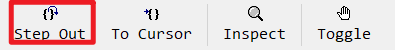
**Shift+F11 **跳出函数，跳出当前运行的函数，如果时main函数，相当于运行到下一个断点
单步运行
F10 可以单步运行，如果当前行有函数，会自动执行完函数，不会自动进入
运行到下个断点

和F5功能差不多
监测变量值

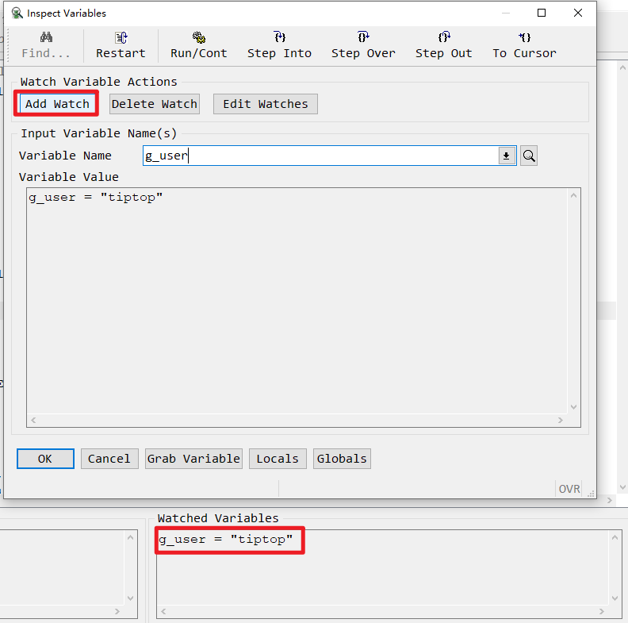
**Ctrl+I **，弹出变量监测窗口，你可以查看变量当前值，也可以将变量增加到监测窗口
增加断点
在选中行增加或取消断点，快捷键F9，或者鼠标双击
DEBUG 命令
bdl中支持一些命令，可以方便debug，这里说一些比较常用的类型，更多类型可以看帮助文档。
在画面中指定debug命令，要打开命令窗口运行，快捷键Ctrl+D，也可以在菜单Run→Execute Debugger Command
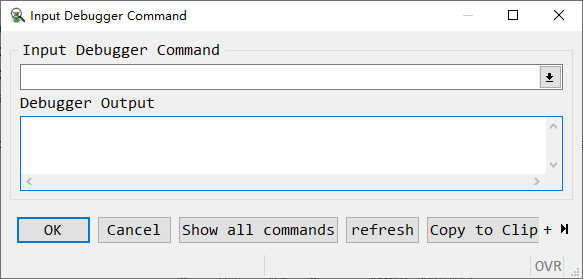
指定函数断点
b cl_cp_r 会在cl_cp_r函数第一行下一个断点
改变变量的值

set variable g_user='tiptop’ 强行改变变量的值
当变量值变化时自动暂停
watch g_user if g_user='tiptop’ ，当g_user变量变为’tiptop‘时，自动暂停
接口的DEBUG
前提
普通作业的debug你已经会使用，后面会出一篇普通debug的使用。
事先准备
下载可以抛砖测试的api测试软件，如soapui、postman这些软件，只要能抛转都可以用。
tiptop gp 的webservice 建议使用soapui比较方便，T100的Restful使用postman比较方便。
软件配置
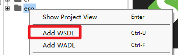

点击OK后，系统会自动产生对应的接口信息，如果未产生，请检查接口服务是否启动

soap ui使用
点击你要测试的接口
ERP函数名称和接口名称对应关系可以在aws_ttcfg2中查到

这里要注意的是，<要替换为< <![CDATA[…]]> 中的< 不需要替换，因为已经转义过一次

点击运行，就能模拟一次正常的接口请求。
DEBUG ERP程序
指定断点
ERP的webservice程序为aws_ttsrv2，做过客制的话有可能是其它作业。
和正常作业一样，我们使用r.d2+ aws_ttsrv2进入到debug页面
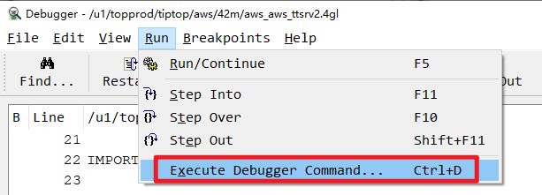
我们在debug命令窗口，指定我们想要停止的断点，一般用我们需要停止的函数做断点即可。
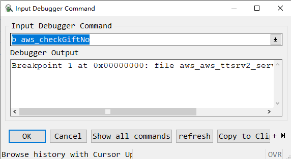
指定端口
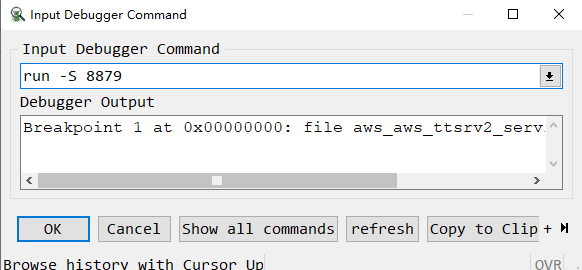
断点指定好之后，我们需要指定一个端口用来测试，端口编号只要没有被占用即可
点击OK之后，我们就进入到了等待服务需求状态，这个时候debug会一直转圈等待。
soap ui指定端口

我们将soap ui中的地址改为和debug一致的端口，然后点击提交。
这个时候debug会进入到断点处，我们开始和正常程序一样debug即可。如果需要重新抛转，在debug中点击允许，soap ui重新抛转一次，就可以在回到断点处。
DISPLAY 触发不了 DEFORE DISPLAY问题
利用page 标签 action 属性触发
主动触发row change
IF g_sfdc_d[l_ac].sfdc005 != g_sfdc_d_o.sfdc005 END IF
CALL DIALOG.setFieldTouched("s_detail2.*", TRUE)
END IF
修改部分字体大小
- 找到4st文件目录，此文件影响所有作业格式，修改前务必备份
- 修改4st文件，增加Menu的字体大小，还可以修改颜色，字体类型等

修改后如下

其它字段可以自己摸索，'Menu'关键字是根据，DEBUG TREE找到，CTRL+右键 画面空白处可打开。
取当前时间
DEFINE d1, d2 DATETIME YEAR TO FRACTION(3)
LET d1 = CURRENT YEAR TO FRACTION(3)
LET d2 = "1998-01-23 12:34"
DISPLAY d1, d2
YEAR
MONTH
DAY
HOUR
MINUTE
SECOND
FRACTION
FRACTION(1)
FRACTION(2)
FRACTION(3)
FRACTION(4)
FRACTION(5)
fglWrt 授权查询
fglWrt -a info
sed 截取文件
sed -n '100,200p' 123.xml >> 12.xml
将123.xml 中从100行到200行内容复制到12.xml这个文件中。
grep 命令
-
直接用就是查询所有匹配内容
-
参数 -l
grep -l "hello,world!" file_name
- 参数 -wo
grep -wo "keyword" filename |wc -l
- 参数 -rn 这个参数可以查询匹配的文件名和所在行数
grep -rn "hello,world!" file_name
修改日期格式
export DBDATE=Y4MD/
设置debug时，日期变为'yyyy/mm/dd'格式，不设置为'yy/mm/dd'
环境变量FGLSQLDEBUG
此环境变量，控制运行程序时，后台显示日期的等级。
最高等级为9，取消设置命令为unset FGLSQLDEBUG
将环境变量设置为9 后，运行我们想要分析效能的程序，并将日志记录到文件中。
export FGLSQLDEBUG=9
exe2 p_zz >> p_zz.log 2>&1
分析日志
日志除了人工分析，系统也有作业可以分析。
-
TIPTOP GP 运行
$FGLRUN $DS4GL/bin/fgldebug.42r -
T100 运行
$FGLRUN $UTL/fbin/42m/T100SQLDebug.42r p_zz.log
即可打开效能分析工具
2.40 版本
-
总览，在Contents中，Genero BDL菜单下为BDL语法的主要内容，可以浏览BDL所有语法
-
在Index中，可以选择搜索关键字到达指定页面
2.50 版本
- 在2.50版本中，菜单为Genero Business Development Language User Guide 2.50
- Index 中同样可以依据关键字查询

3.00 版本
网页版无2.40版本手册，最早只有2.50版本，有更新的版本LINK 3.10 和4.00版本，方便查询，但是语法很多不支持不建议使用。
这里只介绍2.50版本手册。
- 链接打开即为BDL语法总览，这里可以根据菜单浏览所有BDL语法。

- 翻译：网页版比安装版本有一个好处是可以使用网页翻译为中文。
Chrome浏览器翻译
在地址栏最右侧点击翻译图标，或者在网页空白处右键，点击翻译为中文。
Edge浏览器翻译
右键空白处点击翻译为中文


- 搜索：通过Search选项搜索，Index选项的搜索没有Search准确
模组清单
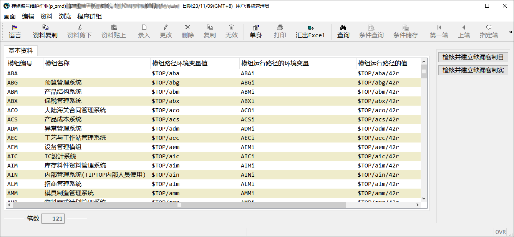
模组看起来很多，常用的只有下面几个：
AAP 应付账款
ABM 产品结构系统 产品BOM结构
AEC 工艺与工作站系统 产品的工艺资料
AGL 总账会计
AIM 库存料件资料管理系统
AOO 整体系统管理
APM 采购管理
ANM 票据资金
AQC 质量管理
ASF 生产管理
AWS 集成管理
AXC 成本管理
AXM 销售管理
AXR 应收账款
AZZ 系统管理
SUB 一般副程序
LIB 公用程序
GAP 应付账款管理系统大陆版
模组编号A变为C，就变成了客制模组，客制添加的作业一般在客制模组。
如果模组第一个字母不是A，是直接加C，如CSUB、CLIB、CGAP。
作业类型编码
不同类型的作业可以分为以下几类：
-
单档录入作业：i
-
单档参数作业：s
-
双档录入作业：t
-
查询作业：q
-
报表作业：r
-
批处理作业：p
程序命名规则
程序一般为4为字母和3为流水码组成。（部分模组为了让开发者更好记住，不是这样命名，如p_zz，p_zx，p_zxw这些都是azz模组下的作业，不按照此命名方式命名）
例如：
aooi040 —> aoo是模组的名称，i 是作业类型编号，040 是流水号。
这个作业是aoo整体系统管理模组下的一个单档可录入资料的作业。
数据库命名规则
数据库表名规则
数据库表名分为表名和固定后缀两个部分，ERP中所有正式表（在p_zta中注册的表）都有固定的后缀（_file）。
-
标准表
标准表的表名是三位字母，这是鼎捷出场就建立好的表。我们不会去动这些表名。
如工单单头表名：sfb_file
-
客制表
后续客制添加的表名是以
tc_固定前缀，和三位字母加上固定的后缀_file组成的。例如你要客制一个表，可以用
tc_sfb_file，这样的方式命名。其中tc_与_file都是固定的只有三位字母需要自己取名。
数据库表字段规则
数据库的表字段也是由两部分组成 表名+流水码。
-
标准表的标准字段
流水码一般为2为流水码，有时候字段多，可以用多维流水码或者字母，这个限制不是太死。一般是2位流水码。
例如：工单单号字段
sfb01，看名称sfb就是表名，这个字段是sfb_file表的一个字段，01是流水码。 -
标准表的客制字段
如果标准表中的字段不够用，可以增加字段，增加的字段叫做客制字段。
客制字段需要在字段前加固定前缀****
ta_，例如：sfb_file表中增加客制字段用来记录备注，可以命名为ta_sfb01 -
客制表的字段
客制表的字段也是表名+流水码，例如
tc_sfb01，tc_sfb02 -
ud字段 undefine
在标准表中有一些定义了但是没有使用的字段，例如：
sfbud01，sfbud02，这些字段定义了但是没有存储数据，我们后面可以使用这些字段。当ud字段数量不够时，可以在增加
ta_sfb01，ta_sfb02这些客制字段。
规格画面编写
复制类似作业
找一个画面类似的作业，将作业对应的4fd文件下载下来修改使用。
单档作业
- 表单作业

- 表格作业
双档作业

查询作业

报表作业

从零开始

- 新增4fd文件

- 将需要的控件拖拽到空白画布上
画面编译过程
- r.f2 42f 文件

- r.gf 2 p
预览画面，并将字段说明产生p_per多语言档文件

- p_per 多语言文档

显示到其它类型字段
display "123" to field1
define l_name record
filed1 varchar(20),
field2 varchar(40),
field3 decimal(10,2)
end record
display by name l_name.*
-- 等同以下写法
display l_name.field1,l_name.field2,l_name.field3 to field1,field2,field3
-- 如果结构体成员名称和要显示到的字段名称不相同，则必须指定栏位名称，不能用.*方式
display l_name.field1,l_name.field2,l_name.field3 to fieldok,filedno,field3
显示到Table
使用table，需要一个和table的字段类型一致的结构体数组，即4fd文件中的table字段名称和类型与4gl中结构体数组的成员名称和类型要保持一直
define l_list dynamic array of record
field1 varchar(20),
field2 decimal(20,6),
field3 varchar(30),
field4 integer
end record
-- l_list 是4gl中的结构体数组名称
-- s_list 是4fd画面中表格的name名称
display array l_list to s_list.*
end display
Windows
open window czz_w with form "czz/42f/czzi001"
call cl_ui_init() -- 这lib函数为初始化画面，如果不调用会出现一个空窗口。
...
close czz_w
Form
open form czz_w from "czz/42f/czzi001"
display form czz_w
...
close form czz_w
MENU
开启窗口(window)后，我们必须对画面进行一些操作，否则，开启后就关闭，画面并不会显示什么。
这里就是第一个语法MENU。
database ds
main
open window act_w with form "czz/42f/czzi001"
menu ""
command "a.add" #menu 功能名称"a.新增"，a 为快速键
message "a.add"
command "u.modi"
message "u.modi"
command "q.qry"
message "q.qry"
command key (control-a) # control-a 为快速键且
message "control-a" #此功能不show menu 上
command "exit"
close window act_w
exit program
on action click_me
message "click_me"
end menu
end main
command ‘click’
右侧生成一个按钮，如果是”a.click”的形式，a是这个按钮的快捷键。
在command ‘click’ 下方
command key(control-a)
仅快捷键，不会产生按钮
on action click
产生按钮，但名称不能重复
MESSAGE
Structure 结构
Screen Record 画面字段结构

每一个添加到画面文件中的字段，都会自动添加到record记录上，每个表格会变为一组，不在表格中的字段顺序不需要关注。

表格record 的名称和字段的顺序，是你在4gl代码中使用时要注意的，所以这里顺序需要注意。
Properties 属性
name 字段名
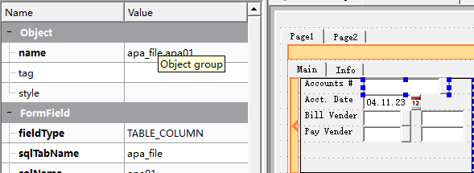
字段的名称一般设置为表字段即可，apa01、apa_file.apa01 都是一样的，apa_file是表名，一般不需要，我们自己建立的时候，不需要加表名。
如果字段重复，也可以取其它名称，如果apa01_1、或者其它符合标识符规则的命名，如果在程序中要使用这个字段，请使用一个方便使用的字段名。
posX,poxY 字段位置
gridWidth，gridHeight 字段大小

字段的大小和位置，一般是我们用鼠标拖动的，但是也可以在这里做微调。
noEntry 不需录入
notNull 不为空
required 必须录入
case 大小写
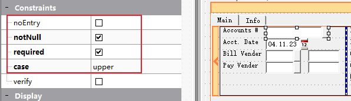
设置字段录入时候的属性，设置为大写，录入字母时自动转化为大写
hidden 隐藏

设置后字段依然存在，但是用户无法看到此字段
image 图片（buttonEdit使用zoom）
action （buttonEdit 使用controlp）


只有ButtonEdit控件需要设置这两个数量，image设置开窗按钮的图片，action 是控制什么时候出发开窗这个动作
items （下拉框等空间使用）
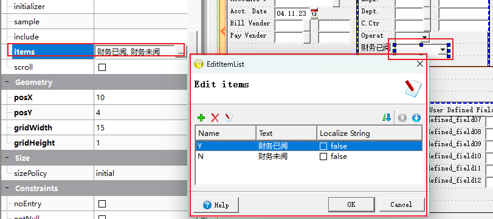
下拉框空间中，可以通过items选项设置下拉框可以使用的元素
valueCheded、valueUncheked （单选框控件使用）

单选框，选中和未选中可以设置一个值，当选择时为Y，未选中为N。默认为1和0。
text （单选框等控件使用） 字段名称

单选框还可以设置text，会显示到单选框后
Tab Order 默认顺序

Tab Order控制在输入时，字段的顺序。当没有4gl代码强制控制字段顺序时，按entry或者tab键，会按照此序号顺序依次录入。
布局
多个容器在同一个层级的时候，需要将他们设置一个布局，垂直或者水平显示。

如果不小心设置错，可以点击布局 Break Layout后重新设置
从其它字段输入
从Table输入
布局
布局有两种方式，垂直和水平，多个容器要放在一个布局中


容器
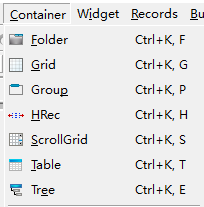
| 名称 | 功能说明 |
|---|---|
| Folder | 以切页方式的空白画布 |
| Grid | 简易空白画布 |
| ScrollGrid | 有卷轴的空白画布 |
| Table | 以表格方式显示阵列资料 |
| Tree | 以层次结构展示的阵列资料 |
- Folder
当摆放元件空间不足时（或是需要滚动画面，操作上较麻烦时），即可使用切页的功能，以资料夹的形式将资料性质相近的栏位，切分在同样的 page 当中。
制作时可在页签位置以鼠标右键新增、删除页面。
编译时若该页签内没有任何元件，则编译会失败，且系统会显示有空白页签存在。 页签上显示字符串仍需在属性视窗指定。
Genero Studio

画面预览

- Grid
可将此容器视为一块空白的画布，布置在上方的元件都可以显示在画面相对位置上。
Grid 只能处理非阵列资料。Grid 不可以被安排在其他 Grid 容器之内。
Genero Studio

画面预览

- ScrollGrid
在 Genero Studio 中，此容器与 Grid 相同，均作为处理非阵列资料用。与 Grid 容器的差异仅在可使用滚动轴，可以滚动画面。不能用于显示阵列资料。
Genero Studio

画面预览

- Table
使用 TABLE 即是以表格方式显示阵列资料，此方式有许多的优点，这些优点都是系统提供的，不需要额外再撰写程序码即可使用；
包含：动态排序、栏位隐藏、显示或移动等。 在设计时期改变 Table 高度时，会自动增减资料的行数。 在 Table 物件上按鼠标右键，在弹出式选单可以新增或移除栏位。
另外可以直接以鼠标拖曳改变栏位的顺序。
编写时须注意：
-
使用 TABLE 物件时，资料（Record）一定是横列，没有直垂直排列。
-
编写时须到各栏位的属性中进行形态、对应数据库等资料的设定或变更。
Genero Studio

画面预览

-
Tree
Tree 树状图预览时和 Table 是一样的，当有资料的资料，树状图是有层级结构的。
当节点展开时，可以展开上下级结构。
Genero Studio

画面预览

控件
- Label
定义显示值用的栏位，可区分为下列三类。
-
StaticLabel
静态文字标签，可设定宽度、 前景色等。


-
Text
StaticLabel 可以和 Text 相互转换。Text 字符数自动决定大小的基本静态文字标签。无法自行设定宽度。

-
FormFieldLabel
动态标签，代码可以控制值的显示


-
Edit
定义一个编辑栏位。属于 FormField 物件，可设定与资料栏位的关联。
  -
ButtonEdit
定义一个编辑栏位的元件，可透过右侧按钮以触发某一事件。通常用在串连与此栏位输入时有关的动作，例如查询合法可用资料等。
  -
ComboBox
定义一个可利用下拉功能选值的编辑栏位，若输入资料只有几种值可供选择时，建议采用 RadioGroup 方式来限缩使用者可输入的内容（参阅 RadioGroup）。属于 FormField 物件，可设定与资料栏位的关联。
 选项对话视窗:
可管理 ComboBox 的选项，也可以按字母顺序排列选项的 Text。

-
DateEdit
定义一个日期编辑，按右侧钮可带出 Client 端万年历选择视窗。日期显示格式由主机端 DBDATE 环境变量控制。
  -
CheckBox
当栏位选项只有两种选择时（如：是或否，0 或 1，100 或 200 等），就可以采用此种输入型态执行输入。
  -
HLine
水平分隔线
  -
TextEdit
定义可编辑多行的栏位，输入长度当超过画面预留长度时，会自动出现卷轴。
  -
Button定义一个按钮以触发某一 4GL 中已写定的 ON ACTION 段。
建议除了特别的 ACTION 有需要在 Layout 内布置按键外，一般作业可不必布置.
  -
RadioGroup定义一个可用选择方式输入资料的输入栏位，此种选择方式会将选项清单展示在画面上（ComboBox 不会展开显示，可参照 ComboBox 说明），故若需要采用此输入形态，要注意画面空间是否足够。
   -
Canvas  -
ProgressBar  -
TimeEdit  -
Image -
Slider  -
SpinEdit  -
WebComponent